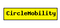

File: Mobility/CircleMobility.ned
C++ definition: click here
Moves the node around a circle.
See also: ChannelControl
Author: Andras Varga
The following diagram shows usage relationships between modules, networks and channels. Unresolved module (and channel) types are missing from the diagram. Click here to see the full picture.
| Name | Type | Description |
|---|---|---|
| debug | bool | debug switch |
| cx | numeric const | x coord of the center of the circle |
| cy | numeric const | y coord of the center of the circle |
| r | numeric const | radius of the circle |
| speed | numeric const | speed of the host (in m/s) |
| startAngle | numeric const | starting angle (degreees) |
| updateInterval | numeric const | time interval to update the hosts position |
simple CircleMobility parameters: debug : bool, // debug switch cx: numeric const, // x coord of the center of the circle cy: numeric const, // y coord of the center of the circle r: numeric const, // radius of the circle speed: numeric const, // speed of the host (in m/s) startAngle: numeric const, // starting angle (degreees) updateInterval : numeric const; // time interval to update the hosts position endsimple